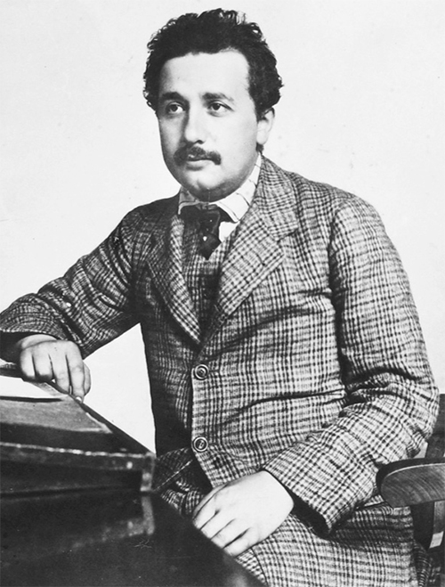

Lượng tử và phân tử, năm 1905

Tại Cục Cấp bằng Sáng chế, năm 1905
Năm 1900, Huân tước Kelvin đáng kính đã nói với Hiệp hội vì sự Tiến bộ của Khoa học nước Anh như sau: “Giờ thì chẳng còn gì mới để khám phá trong vật lý nữa. Tất cả những gì còn lại là phép đo ngày càng chính xác thôi.” Thế nhưng, ông đã sai.
Cuối thế kỷ XVII, Isaac Newton (1642-1727) đã đặt các nền móng cho vật lý cổ điển. Dựa trên các phát minh của Galileo và những người khác, ông đã phát triển những định luật mô tả một vũ trụ cơ học rất dễ hiểu: quả táo rơi và Mặt trăng chuyển động theo quỹ đạo đều bị chi phối bởi các quy luật giống nhau liên quan đến lực hấp dẫn, khối lượng, lực và chuyển động. Nguyên nhân đưa tới hệ quả, lực tác dụng lên vật, và về lý thuyết, mọi cái đều có thể được giải thích, xác định và tiên đoán. Như nhà toán học và thiên văn học Laplace hào hứng nói về vũ trụ của Newton: “Một trí tuệ thấu biết tất cả các lực đang hoạt động trong tự nhiên tại một thời điểm nhất định, cũng như vị trí nhất thời của vạn vật trong vũ trụ; có thể hiểu, bằng một công thức đơn nhất, chuyển động của những vật lớn nhất cũng như những nguyên tử nhẹ nhất trên đời. Đối với ông ta, không có gì là không chắc chắn, tương lai cũng như quá khứ đều hiện diện ngay trước mắt ông ta.”
Einstein khâm phục tính nhân quả nghiêm ngặt này và gọi nó là “đặc điểm sâu sắc nhất trong nghiên cứu của Newton”. Ông tóm tắt một cách hài hước lịch sử vật lý: “Ban đầu (nếu đúng là như thế) Thượng đế đã tạo ra các định luật chuyển động của Newton cùng với các khối lượng và lực cần thiết.” Điều đặc biệt gây ấn tượng đối với Einstein là “những thành tựu của cơ học trong những lĩnh vực dường như không liên quan gì tới cơ học”, chẳng hạn lý thuyết động học mà ông đã đang khám phá, lý thuyết này giải thích hoạt động của các chất khí do tác dụng của hàng tỷ phân tử va chạm vào nhau gây ra.”
Giữa những năm 1800, cơ học của Newton đã kết hợp với một bước tiến vĩ đại khác. Nhà thực nghiệm người Anh, Michael Faraday (1791-1867), người con trai tự học của một bác thợ rèn, đã phát hiện các tính chất của điện trường và từ trường. Ông đã chứng minh rằng dòng điện tạo ra từ tính, và sau đó lại tiếp tục chứng minh từ trường thay đổi có thể tạo ra dòng điện. Khi một nam châm chuyển động gần một vòng dây, hay ngược lại, dòng điện được sinh ra.
Công trình của Faraday về cảm ứng điện từ cho phép các chủ doanh nghiệp chuyên sáng chế như cha và chú của Einstein sáng tạo những cách mới kết hợp các cuộn dây tròn và nam châm động để làm ra máy phát điện. Từ đó, Albert Einstein có một cảm nhận vật lý sâu sắc đối với các trường của Faraday, chứ không chỉ hiểu chúng về mặt lý thuyết.
Sau đó, nhà vật lý người Scotland có bộ râu rậm tên là James Clerk Maxwell (1831-1879) đưa ra những phương trình tuyệt vời cho thấy, cùng nhiều điều khác, điện trường thay đổi tạo ra từ trường, và từ trường thay đổi tạo ra điện trường như thế nào. Trên thực tế, điện trường thay đổi có thể tạo ra từ trường thay đổi; tới lượt từ trường thay đổi này lại có thể tạo ra điện trường thay đổi, và cứ thế. Kết quả của sự kết hợp này là sóng điện từ.
Năm Galileo qua đời là năm Newton được sinh ra, cũng như thế, Einstein sinh ra vào năm Maxwell qua đời, và ông thấy mình có nhiệm vụ mở rộng công trình của nhà khoa học người Scotland này. Vậy là ta có ở đây một nhà lý thuyết vứt bỏ những thiên kiến đang thịnh hành, để những giai điệu toán học đưa mình đến những lĩnh vực chưa ai khám phá, và tìm thấy sự hài hòa trên cơ sở của vẻ đẹp và sự đơn giản của một lý thuyết trường.
Suốt cuộc đời mình, Einstein bị các lý thuyết trường cuốn hút, và ông đã mô tả sự phát triển của khái niệm này trong một cuốn sách giáo khoa ông soạn cùng một đồng nghiệp:
Một khái niệm mới xuất hiện trong vật lý, sáng kiến quan trọng nhất kể từ sau Newton: đó là trường. Cần đến một trí tưởng tượng khoa học tuyệt vời để nhận ra rằng không phải là điện tích cũng không phải là các hạt, mà chính là trường trong không gian giữa các điện tích và các hạt mới là thứ thiết yếu để mô tả các hiện tượng vật lý. Khái niệm trường rõ ràng là một thành công khi nó đưa tới cách phát biểu các phương trình Maxwell mô tả cấu trúc của trường điện từ.
Ban đầu, lý thuyết trường điện từ do Maxwell phát triển có vẻ tương thích với cơ học của Newton. Chẳng hạn, Maxwell cho rằng sóng điện từ, bao gồm ánh sáng khả kiến, có thể được giải thích bằng cơ học cổ điển – nếu chúng ta cho rằng vũ trụ tràn ngập một loại “ê-te mang ánh sáng” vô hình, nhẹ như tơ, đóng vai trò là vật chất vật lý tạo chuyển động sóng và dao động để truyền sóng điện từ, như vai trò của nước đối với sóng đại dương và không khí đối với sóng âm.
Tuy nhiên, đến cuối thế kỷ XIX, những vết rạn nứt bắt đầu xuất hiện từ ngay nền móng của vật lý cổ điển. Một vấn đề là các nhà khoa học, dù đã rất cố gắng, vẫn không thể tìm thấy bất cứ bằng chứng nào cho sự chuyển động qua môi trường ê-te truyền ánh sáng được giả định này. Việc nghiên cứu bức xạ – cách thức ánh sáng và các sóng điện từ khác phát ra từ vật thể vật lý – lại cho thấy một vấn đề khác: những điều kỳ lạ đang diễn ra ở ranh giới nơi các lý thuyết của cơ học Newton, vốn mô tả cơ học của những hạt rời rạc, tương tác với lý thuyết trường vốn mô tả tất cả các hiện tượng điện từ.
Đến thời điểm đó, Einstein đã công bố năm bài báo nhỏ. Chúng chẳng mang tới cho ông học vị tiến sỹ hay công việc dạy học, thậm chí là ở trường trung học. Nếu ông từ bỏ vật lý lý thuyết vào thời điểm đó thì cộng đồng khoa học sẽ không để ý, và ông có thể thăng tiến để trở thành người đứng đầu Cục Cấp bằng Sáng chế Thụy Sĩ, một công việc mà ông thực sự có thể làm rất giỏi.
Không có dấu hiệu nào về việc ông sắp tạo nên một năm diệu kỳ, một điều mà khoa học chưa từng thấy kể từ năm 1666 khi Isaac Newton về quê ngoại ở vùng nông thôn Woolsthorpe để tránh bệnh dịch đang tàn phá Cambridge lúc đó, phát triển giải tích và phân tích phổ ánh sáng cũng như các định luật hấp dẫn.
Nhưng vật lý đã vào thế bị đảo lộn lần nữa, và Einstein cũng đã ở thế sẵn sàng là người thực hiện việc đó. Ông có sự nổi loạn cần thiết để quét sạch những lớp hiểu biết thông thường đang che đậy những vết nứt trong nền tảng của vật lý, và trí tưởng tượng trực quan cho phép ông có những bước nhảy về mặt khái niệm vượt trước các nhà tư tưởng truyền thống hơn.
Những đột phá mà ông thực hiện suốt bốn tháng từ tháng Ba đến tháng Sáu năm 1905 được báo trước trong một bức thư cá nhân nổi tiếng nhất trong lịch sử khoa học. Conrad Habicht, một người bạn vui tính hay triết lý trong Hội nghiên cứu Olympia, vừa chuyển khỏi Bern – điều này, đáng mừng thay cho các nhà nghiên cứu lịch sử, đã cho Einstein lý do để viết thư cho Habicht vào cuối tháng Năm năm đó:
Habicht thân mến.
Một không khí im lặng trang nghiêm đã phủ xuống chúng ta đến mức tôi cảm thấy như mình đã báng bổ khi phá vỡ nó bằng một câu chuyện vẩn vơ không đáng bận tâm…
Vậy anh định làm gì, con cá voi ướp lạnh, linh hồn bị hun khói, sấy khô, đóng hộp…? Tại sao anh vẫn chưa gửi cho tôi luận án của anh? Chẳng lẽ anh không biết rằng tôi là một trong số một người rưỡi sẽ đọc nó bằng sự quan tâm và thích thú à, hỡi kẻ đáng ghét? Tôi đảm bảo sẽ có bốn bài báo đáp lại đấy. Bài đầu tiên là về bức xạ, các tính chất năng lượng của ánh sáng, và nó mang tính cách mạng rất cao, như anh sẽ thấy nếu anh gửi công trình của anh cho tôi trước. Bài báo thứ hai là về việc xác định kích thước thật sự của nguyên tử…. Bài thứ ba chứng tỏ rằng các vật có độ lớn cỡ 1/1.000 mm, lơ lửng trong chất lỏng, hẳn phải thực hiện một chuyển động ngẫu nhiên có thể quan sát được do chuyển động nhiệt tạo ra. Sự chuyển động của các vật lơ lửng như vậy thực sự đã được các nhà sinh lý học quan sát, họ gọi nó là chuyển động Brown của phân tử. Bài báo thứ tư chỉ là một bản thảo thô vào thời điểm này và là về điện động lực học của các vật chuyển động có điều chỉnh lý thuyết về không gian và thời gian.
Như Einstein viết cho Habicht, chính bài báo đầu tiên trong số các bài báo năm 1905, chứ không phải bài báo cuối cùng, nổi tiếng vì trình bày về Thuyết Tương đối, mới xứng đáng được gọi là “mang tính cách mạng”. Quả thực, có lẽ nó là bước tiến mang tính cách mạng vĩ đại nhất trong lịch sử vật lý. Việc nó đưa ra giả thuyết rằng ánh sáng truyền đến không chỉ dưới dạng sóng mà còn dưới dạng các gói li ti – lượng tử ánh sáng, sau đó được gọi là photon – đẩy chúng ta vào những đám sương mù khoa học kỳ lạ và dày đặc hơn, mà thật ra là đáng sợ hơn, so với những khía cạnh kỳ lạ nhất của Thuyết Tương đối.
Einstein thừa nhận điều này trong một nhan đề có phần kỳ lạ ông đặt cho bài báo được ông gửi cho tạp chí Annalen der Physik ngày 17 tháng Ba năm 1905: “Về một quan điểm tự nghiệm liên quan đến việc tạo ra và biến đổi ánh sáng”. Tự nghiệm? Nó có nghĩa là một giả thuyết đóng vai trò dẫn lối, đưa ra hướng giải quyết vấn đề, chứ không được xem là đã được chứng minh. Từ câu đầu tiên trong bài báo mà ông công bố về lý thuyết lượng tử cho đến câu cuối cùng trong một bài báo đúng 50 năm sau, ngay trước khi ông qua đời, Einstein xem khái niệm lượng tử và tất cả những điều hàm ẩn chưa được giải quyết là tự nghiệm mà thôi: nó mới là tạm thời, chưa hoàn thiện và chưa hoàn toàn tương thích với các tuyên bố của riêng ông về thực tại nền tảng.
Ở phần chính trong bài báo của Einstein là những câu hỏi khiến nền vật lý ở thời điểm chuyển giao thế kỷ phải điêu đứng, và trên thực tế chúng đã làm nền vật lý điêu đứng như vậy từ thời Hy Lạp cổ đại cho đến nay: Có phải vũ trụ được hình thành từ các hạt như nguyên tử và electron không? Hay nó là một thể liên tục, không bị phá vỡ như trường hấp dẫn hay điện từ trường? Và nếu cả hai phương pháp mô tả các vật đều có lúc hợp lý thì điều gì xảy ra khi chúng giao nhau?
Kể từ những năm 1860, các nhà khoa học đã khám phá một điểm giao nhau bằng cách phân tích cái gọi là “bức xạ vật đen”. Ai từng làm việc với lò hay mỏ hàn xì đều biết, ánh sáng từ các vật liệu chẳng hạn như sắt sẽ đổi màu khi nó nóng lên. Đầu tiên, dường như nó chủ yếu phát ra ánh sáng đỏ. Khi nóng hơn, nó ngả màu da cam nhiều hơn, sau đó là trắng rồi xanh. Để nghiên cứu hiện tượng bức xạ này, Gustav Kirchhoff và những người khác đã làm một bình chứa kim loại đóng kín có một lỗ nhỏ xíu để một ít ánh sáng thoát ra. Sau đó, họ vẽ một đồ thị cường độ của mỗi bước sóng khi thiết bị này đạt trạng thái cân bằng ở một nhiệt độ nhất định. Bất kể thành bình chứa có vật liệu hay hình dạng thế nào, các kết quả đều như nhau. Hình dạng đồ thị chỉ phụ thuộc vào nhiệt độ.
Có một vấn đề. Không ai có thể hoàn toàn giải thích cơ sở của công thức toán học tạo ra hình dạng tựa ngọn đồi của các đồ thị này.
Khi Kirchhoff qua đời, chức danh giáo sư của ông tại Đại học Berlin được trao cho Max Planck. Sinh năm 1858 trong một gia đình người Đức có nhiều học giả, nhà thần học và luật sư nổi tiếng, Planck có những điểm mà Einstein không có: với cặp kính kẹp mũi và bộ quần áo cầu kỳ, ông là một người Đức đầy kiêu hãnh, nhưng có phần nhút nhát, nhưng lại cũng có quyết tâm sắt đá, bản tính bảo thủ và thái độ trang nghiêm. Người bạn chung của cả hai, Max Born, về sau nhận xét: “Khó có thể tưởng tượng được hai người đàn ông nào có phong thái khác nhau hơn. Einstein, một công dân của toàn thế giới, ít gần gũi với những người xung quanh, không lệ thuộc vào bối cảnh xã hội nơi ông ta sống – còn Planck, với truyền thống gia đình và quốc gia ăn sâu, là một người yêu nước nồng nàn, tự hào về sự vĩ đại của lịch sử nước Đức và luôn có ý thức mình là người Phổ trong thái độ đối với đất nước.”
Thái độ bảo thủ khiến Planck hoài nghi về nguyên tử và các lý thuyết hạt nói chung (hơn là sóng và trường liên tục). Như ông viết vào năm 1882: “Mặc dù đến giờ lý thuyết nguyên tử đã có được thành công vĩ đại, nhưng cuối cùng người ta cũng sẽ từ bỏ nó để ủng hộ cho giả thuyết về vật chất liên tục.” Một trong những điều trớ trêu nho nhỏ của hành tinh chúng ta là Planck và Einstein lại có cùng định mệnh đặt nền móng cho cơ học lượng tử, và sau đó cả hai đều chùn bước khi mọi sự trở nên rõ ràng rằng nó khiến các khái niệm về tính nhân quả chặt chẽ và tính chắc chắn mà họ tôn thờ bị suy yếu.
Năm 1900, Planck đưa ra một phương trình, một phần là nhờ việc sử dụng, như cách ông gọi, “phỏng đoán ngẫu nhiên”, để mô tả đường cong của các bước sóng bức xạ ở từng nhiệt độ. Khi làm thế, ông chấp nhận rằng các phương pháp thống kê của Boltzmann mà ông từng phản đối rốt cuộc là đúng. Nhưng phương trình này có một điểm kỳ lạ: nó đòi hỏi phải sử dụng một hằng số nhỏ đến mức không giải thích được (xấp xỉ 6,62607 x 10–34 J.s) thì mới đúng. Nó sớm được đặt tên là hằng số Planck, h, và giờ đuợc biết đến như là một trong những hằng số cơ bản của tự nhiên.
Ban đầu, Planck không biết ý nghĩa vật lý của hằng số toán học này, nếu có, là gì. Nhưng sau đó ông tìm ra một lý thuyết mà ông nghĩ rằng có thể áp dụng không chỉ với bản tính của ánh sáng mà còn cho hoạt động xảy ra khi ánh sáng bị hấp thu hoặc phát ra bởi một miếng vật chất. Ông cho rằng, bề mặt của bất cứ vật nào phát ra nhiệt và ánh sáng – chẳng hạn các thành trong một thiết bị vật đen – cũng chứa các “phân tử dao động” hay những “dao động tử điều hòa”, giống như những chiếc lò xo dao động nhỏ. Các dao động tử điều hòa này chỉ có thể hấp thu hoặc phát ra năng lượng dưới dạng các bó hay bọc rời rạc. Những gói hay bọc năng lượng này chỉ có một lượng cố định, được xác định bằng hằng số Planck, chứ không thể chia được hay có một miền giá trị liên tục.
Planck xem hằng số của mình là một công cụ tính toán đơn thuần vốn chỉ nhằm giải thích quá trình phát ra hay hấp thu ánh sáng, nhưng không áp dụng cho bản tính cơ bản của chính ánh sáng. Tuy nhiên, tuyên bố của ông với Hội Vật lý Berlin tháng Mười hai năm 1900 rất quan trọng: “Vì thế, chúng tôi cho rằng – và đây là điểm quan trọng nhất của toàn bộ phép tính – năng lượng có thể được tạo nên từ một số lượng xác định các gói hữu hạn bằng nhau.
Einstein nhanh chóng nhận ra rằng thuyết lượng tử có thể khiến vật lý cổ điển suy yếu. Về sau ông viết: “Toàn bộ điều này trở nên hoàn toàn rõ ràng với tôi không bao lâu sau khi công trình cơ bản của Planck xuất hiện. Tất cả các nỗ lực của tôi nhằm điều chỉnh nền tảng lý thuyết của vật lý cho phù hợp với kiến thức này thất bại hoàn toàn. Cứ như đất dưới chân chúng tôi bị xới tung lên, nhưng chúng tôi không thấy cái móng vững chắc nào cả.”
Ngoài vấn đề giải thích hằng số Planck thật sự là về cái gì, có một sự tò mò khác về bức xạ cũng cần được giải thích. Nó được gọi là hiệu ứng quang điện, và hiệu ứng này xảy ra khi ánh sáng chiếu lên bề mặt kim loại làm các electron liên kết lỏng lẻo hơn và bị bứt ra. Trong bức thư viết cho Marić ngay sau khi ông biết tin bà có thai vào tháng Năm năm 1901, Einstein tán tụng một “tác phẩm tuyệt đẹp” của Philipp Lenard khám phá về đề tài này.
Các thí nghiệm của Lenard phát hiện một điều bất ngờ. Khi ông ta tăng tần số ánh sáng – chuyển tần số từ nhiệt hồng ngoại và ánh sáng đỏ sang màu tím và cực tím – các electron phát xạ bay ra với nhiều năng lượng hơn nhiều. Sau đó, ông ta tăng cường độ ánh sáng bằng cách sử dụng ánh sáng hồ quang cacbon có thể được làm cho sáng hơn gấp 1.000 lần. Ánh sáng sáng hơn, có cường độ cao hơn thì có nhiều năng lượng hơn, vì vậy việc các electron phát ra có nhiều năng lượng hơn và chuyển động ra xa nhanh hơn dường như là hợp logic. Nhưng điều đó lại không xảy ra. Ánh sáng cường độ cao hơn tạo ra nhiều electron hơn nhưng năng lượng của từng electron vẫn không đổi. Đây là điều mà lý thuyết sóng ánh sáng không giải thích được.
Einstein đã suy nghĩ về công trình của Planck và Lenard suốt bốn năm. Trong bài báo cuối cùng vào năm 1904 của ông, “Về lý thuyết phân tử tổng quát về nhiệt”, ông bàn về việc năng lượng trung bình của hệ phân tử thăng giáng như thế nào. Sau đó, ông áp dụng lý thuyết này cho một thể tích chứa đầy bức xạ và thấy rằng các kết quả thí nghiệm đều có thể so sánh được. Câu kết luận của ông là: “Tôi tin rằng người ta sẽ không thể cho rằng đây là một sự là tình cờ.” Như ông viết cho Conrad Habicht ngay sau khi hoàn thành bài báo năm 1904 đó: “Bây giờ tôi đã phát hiện mối quan hệ giữa kích thước của các lượng tử cơ bản của vật chất và bước sóng bức xạ theo một cách đơn giản nhất.” Dường như ông đã đi đến một lý thuyết rằng trường bức xạ được tạo thành từ các lượng tử.
Trong bài báo về lượng tử ánh sáng năm 1905, được xuất bản sau đó một năm, ông đã làm việc này. Ông lấy điều trùng hợp toán học mà Planck đưa ra, diễn giải nó theo nghĩa đen, liên hệ nó với các kết quả quang điện của Lenard và phân tích ánh sáng như thể nó thật sự được tạo nên từ các hạt tựa điểm – ông gọi chúng là lượng tử ánh sáng – thay vì là một sóng liên tục.
Einstein mở đầu bài báo của mình bằng cách miêu tả sự khác biệt giữa các lý thuyết dựa trên hạt (chẳng hạn như lý thuyết động học chất khí) và các lý thuyết liên quan đến những hàm liên tục (chẳng hạn trường điện từ của lý thuyết sóng ánh sáng). Ông viết: “Tồn tại một sự khác biệt hình thức sâu sắc giữa các lý thuyết mà các nhà vật lý đưa ra về chất khí cũng như những vật có thể cân được khác và lý thuyết của Maxwell về các quá trình điện từ trong không gian được xem là trống rỗng. Khi chúng ta xem trạng thái của một vật được xác định hoàn toàn bởi vị trí và vận tốc của một số lượng rất lớn, nhưng hữu hạn, các nguyên tử và electron, chúng ta sử dụng các hàm không gian liên tục để mô tả trạng thái điện từ của thể tích đã cho.”
Trước khi ông đưa ra luận điểm chứng minh cho lý thuyết hạt ánh sáng, ông nhấn mạnh rằng lý thuyết này không nhất định loại bỏ lý thuyết sóng, lý thuyết sóng vẫn hữu ích. Lý thuyết sóng ánh sáng, có tác dụng với các hàm không gian liên tục, rất hiệu quả trong việc trình bày các hiện tượng quang học thuần túy, và có lẽ sẽ không bao giờ có thể thay thế được bằng một lý thuyết khác.”
Cách ông thích ứng với cả lý thuyết sóng và lý thuyết hạt là đề xuất, theo cách “tự nghiệm”, rằng quan sát của chúng ta về các sóng liên quan đến trung bình thống kê của các vị trí của vô số hạt. Ông nói: “Nên nhớ rằng các quan sát quang học đề cập tới trung bình thời gian thay vì giá trị tức thời.”
Sau đó là câu mang tính cách mạng nhất mà Einstein từng viết. Nó đưa ra giả thuyết rằng ánh sáng được tạo nên từ những hạt rời rạc hoặc các gói năng lượng: “Theo giả thuyết được xét ở đây, khi một tia sáng được truyền đi từ một điểm, năng lượng không được phân bố liên tục trong một không gian ngày càng rộng, mà bao gồm một số lượng hữu hạn các lượng tử năng lượng nằm tại các điểm trong không gian, và chỉ có thể được tạo ra và hấp thu dưới dạng các đơn vị hoàn chỉnh.”
Einstein kiểm tra giả thuyết này bằng cách xác định xem liệu một thể tích bức xạ vật đen, mà ông cho là bao gồm các lượng tử rời rạc, trên thực tế có thể hoạt động như một thể tích khí mà ông đã biết là gồm có những hạt rời rạc hay không. Đầu tiên, ông xem xét những công thức cho biết entropy của một chất khí thay đổi như thế nào khi thể tích của nó thay đổi. Sau đó ông so sánh với cách thức entropy của bức xạ vật đen thay đổi khi thể tích của nó thay đổi. Ông thấy rằng entropy của bức xạ “thay đổi theo thể tích theo cùng định luật như entropy của một khí lý tưởng”.
Ông thực hiện một tính toán dùng các công thức thống kê cho entropy của Boltzmann. Về mặt toán học mà nói, cơ học thống kê mô tả chất khí loãng có các hạt thì giống với cơ học thống kê mô tả bức xạ vật đen. Từ đó, Einstein tuyên bố rằng bức xạ “hoạt động về mặt nhiệt động lực học như thể nó gồm các lượng tử năng lượng độc lập với nhau”. Nó cũng cho một cách tính năng lượng của một “hạt” ánh sáng ở một tần số cụ thể, điều này hóa ra lại phù hợp với những gì Planck đã tìm ra.
Einstein tiếp tục chỉ ra sự tồn tại của các lượng tử ánh sáng này có thể giải thích như thế nào cái mà ông gọi một cách hòa nhã là “công trình tiên phong” của Lenard về hiệu ứng quang điện. Nếu ánh sáng truyền đi dưới dạng lượng tử rời rạc thì khi đó năng lượng của từng lượng tử được xác định đơn giản bằng tần số ánh sáng nhân với hằng số Planck. Einstein đưa ra giả thuyết, nếu chúng ta cho rằng “một lượng tử ánh sáng truyền toàn bộ năng lượng của nó cho mộtelectron đơn”, thì khi ánh sáng có tần số cao hơn sẽ khiến các electron phát ra có nhiều năng lượng hơn. Mặt khác, việc tăng cường độ ánh sáng (nhưng không tăng tần số) chỉ có ý nghĩa là nhiều electron sẽ được phát ra hơn, còn năng lượng của từng electron vẫn không đổi.
Đó chính xác là điều mà Lenard đã phát hiện. Với chút khiêm tốn hoặc thăm dò, cùng với mong muốn chứng tỏ các kết luận của mình đã được diễn dịch ở góc độ lý thuyết hơn là được quy nạp hoàn toàn từ số liệu thực nghiệm, Einstein tuyên bố tiền đề cho bài báo của mình: ánh sáng gồm các lượng tử cực nhỏ: “Như tôi thấy, quan niệm của chúng ta không mâu thuẫn với các tính chất của hiệu ứng quang điện mà ngài Lenard quan sát được.”
Bằng cách thổi vào đám than hồng của Planck, Einstein đã biến nó thành ngọn lửa thiêu cháy vật lý cổ điển. Vậy chính xác thì Einstein đã tạo ra điều gì để làm bài báo năm 1905 của ông thành một bước nhảy gián đoạn – mà người ta không khỏi cưỡng lại mong muốn gọi đó là bước nhảy lượng tử – vượt khỏi công trình của Planck.
Thực tế là, như Einstein viết trong một bài báo vào năm sau đó, vai trò của ông là phát hiện ý nghĩa vật lý của điều mà Planck đã khám phá. Đối với Planck, một nhà cách mạng miễn cưỡng, lượng tử là một công cụ toán học giải thích năng lượng được phát ra và hấp thu như thế nào khi nó tương tác với vật chất. Nhưng ông không thấy nó có liên quan tới thực tại vật lý cố hữu trong bản tính của ánh sáng và bản thân trường điện từ. Các nhà nghiên cứu lịch sử khoa học Gerald Holton và Steven Brush viết: “Người ta có thể diễn giải rằng bài báo năm 1900 của Planck chỉ muốn nói rằng giả thuyết về lượng tử được sử dụng như một công cụ toán học tiện lợi, được đưa ra để tính một phân bố thống kê, chứ không phải là một giả thuyết vật lý mới.”
Trong khi đó, Einstein xem lượng tử ánh sáng là một đặc điểm của thực tại: một nỗi trớ trêu phức tạp, khó chịu, bí ẩn và đôi khi bực mình trong vũ trụ. Đối với ông, những lượng tử năng lượng này (vào năm 1926 được gọi là photon) tồn tại ngay cả khi ánh sáng truyền qua chân không. Ông viết: “Chúng tôi muốn chứng tỏ rằng quyết tâm của ngài Planck về lượng tử cơ bản là độc lập ở một mức độ nào đó với lý thuyết bức xạ vật đen của ông ấy.” Nói cách khác, Einstein lập luận rằng bản chất hạt của ánh sáng là một tính chất của chính ánh sáng, chứ không phải là sự mô tả nào đó về việc ánh sáng tương tác với vật chất như thế nào.”
Thậm chí sau khi Einstein công bố bài báo của mình, Planck vẫn không chấp nhận bước nhảy của Einstein. Hai năm sau, Planck đã cảnh báo giám định viên bằng sáng chế trẻ tuổi rằng anh ta đã đi quá xa, và rằng lượng tử đã mô tả một quá trình diễn ra trong tiến trình phát hoặc hấp thu ánh sáng, hơn là tính chất bức xạ có thực nào đó trong chân không. Ông khuyên: “Tôi không tìm kiếm ý nghĩa của ‘lượng tử hoạt động’ (lượng tử ánh sáng) trong chân không, mà ở điểm hấp thu và phát ra nó.”
Mãi đến sau này Planck vẫn không tin rằng lượng tử ánh sáng là một thực tại vật lý. Tám năm sau khi bài báo của Einstein được công bố, Planck đề cử Einstein vào một vị trí mà nhiều người thèm muốn trong Viện Hàn lâm Khoa học Phổ. Bức thư của ông và những người ủng hộ khác đầy những lời khen tặng Einstein, nhưng Planck cũng nói thêm: “Việc anh ta đôi khi phóng đại mục tiêu trong sự phỏng đoán của mình, chẳng hạn trong giả thuyết về lượng tử ánh sáng của anh ta, không nên bị xem là bất lợi cho anh ta.”
Chỉ trước khi qua đời, Planck mới suy ngẫm về việc từ lâu ông đã lùi bước trước chính những điều hàm ẩn trong phát minh của mình. Ông viết: “Những cố gắng vô vọng của tôi nhằm làm cho lượng tử cơ bản hoạt động theo lý thuyết cổ điển cứ tiếp diễn trong nhiều năm và khiến tôi mất nhiều công sức. Nhiều đồng nghiệp của tôi thấy trong việc này có điều gì đó gần giống như một bi kịch.”
Trớ trêu thay, những lời tương tự về sau lại được dùng để nói về Einstein. Theo nhận định của Born về Einstein, ông ngày càng trở nên “thờ ơ và hoài nghi” trước những phát hiện liên quan tới lượng tử mà mình đi tiên phong. “Nhiều người trong chúng tôi xem đây là một bi kịch.”
Lý thuyết của Einstein tạo ra một định luật về hiệu ứng quang điện có thể kiểm tra bằng thực nghiệm: theo một công thức toán học đơn giản có sử dụng hằng số Planck, năng lượng của các electron phát ra phụ thuộc vào tần số ánh sáng. Công thức này về sau đã được chứng minh là đúng. Nhà vật lý tiến hành thí nghiệm quan trọng này là Robert Millikan, sau này là người đứng đầu Viện Công nghệ California và cố gắng tuyển Einstein về làm việc.
Thế nhưng ngay cả khi đã kiểm chứng các công thức quang điện của Einstein, Millikan vẫn bác bỏ lý thuyết này. Ông tuyên bố: “Mặc dù phương trình của Einstein có vẻ hoàn toàn thành công, nhưng lý thuyết vật lý mà dựa trên đó nó được cho biểu thức ký hiệu thì đuối lý đến mức tôi cho là ngay cả bản thân Einstein cũng còn chẳng bằng lòng.”
Millikan đã sai khi nói rằng phát biểu của Einstein về hiệu ứng quang điện đã bị bác bỏ. Trên thực tế, chính nhờ việc phát hiện ra định luật hiệu ứng quang điện mà Einstein đã giành được giải Nobel duy nhất của mình. Với sự lên ngôi của cơ học lượng tử vào những năm 1920, tính thực tại của photon trở thành một phần cơ bản của vật lý.
Tuy nhiên, xét ở góc độ rộng hơn thì Millikan đã đúng. Einstein ngày càng thấy những hàm ẩn kỳ lạ về lượng tử – và lưỡng tính sóng-hạt của ánh sáng – là vô cùng đáng lo. Trong một bức thư ông viết lúc gần cuối đời cho người bạn thân Michele Besso, sau khi cơ học lượng tử được hầu hết các nhà vật lý chấp nhận, Einstein than thở: “50 năm trời suy nghĩ vẫn chưa đưa tôi đến gần hơn với việc trả lời cho câu hỏi lượng tử ánh sáng là gì?”
Einstein đã viết một bài báo làm nên cuộc cách mạng khoa học, nhưng ông vẫn chưa có được học vị tiến sỹ. Vì vậy, ông đã cố một lần nữa để luận án của mình được chấp nhận.
Ông nhận ra rằng ông cần một đề tài an toàn chứ không phải một đề tài cấp tiến như lượng tử hay Thuyết Tương đối, vì vậy ông chọn bài báo thứ hai mà ông đang thực hiện, có nhan đề “Một cách mới để xác định kích thước phân tử”. Ông hoàn thành bài báo này vào ngày 30 tháng Tư và nộp cho Đại học Zurich vào tháng Bảy.
Có lẽ vì thận trọng và chiều theo phương pháp bảo thủ của người hướng dẫn mình, Alfred Kleiner, ông thường tránh sử dụng vật lý thống kê tân tiến như trong những bài báo trước đó (cũng như trong bài báo về chuyển động Brown được hoàn thành 11 ngày sau đó), và chủ yếu dựa trên thủy động lực học cổ điển. Nhưng ông vẫn có thể khám phá cách thức mà hoạt động của vô số vi hạt (nguyên tử, phân tử) được phản ánh trong các hiện tượng có thể quan sát, và ngược lại cách thức các hiện tượng quan sát được có thể cho chúng ta biết về bản tính của những vi hạt vô hình này.
Trước đó gần một thế kỷ, nhà khoa học người Ý, Amedeo Avogadro (1776-1856), đã phát triển giả thuyết – mà hóa ra là đúng – rằng khi được đo ở cùng một nhiệt độ và áp suất, những thể tích bằng nhau của bất cứ chất khí nào sẽ có số lượng phân tử như nhau. Điều này dẫn đến một cuộc tìm kiếm khó khăn: số phân tử đó là bao nhiêu.
Thể tích thường được chọn là thể tích chứa một mol khí (trọng lượng phân tử tính bằng gam), bằng 22,4 lít ở nhiệt độ và áp suất tiêu chuẩn. Số lượng phân tử trong những điều kiện như vậy về sau được gọi là số Avogadro. Việc không hề dễ dàng để xác định chính xác con số đó. Con số ước tính hiện nay là xấp xỉ 6,02214 x 1023. (Đây là một con số rất lớn, nó bằng số lượng hạt bắp chưa nổ mà nếu trải khắp Hoa Kỳ sẽ làm đất nước này ngập dưới độ sâu 9 dặm).
Hầu hết các phép đo phân tử trước đó đều được thực hiện qua việc nghiên cứu các chất khí. Nhưng như Einstein đã viết trong câu đầu tiên của bài báo: “Các hiện tượng vật lý quan sát được trong chất lỏng đến nay vẫn chưa phục vụ cho việc xác định kích thước phân tử.” Ở luận án này (sau khi sửa lại đôi chút về phần toán học và số liệu), Einstein trở thành người đầu tiên có được kết quả đáng nể khi sử dụng chất lỏng.
Phương pháp của ông bao gồm việc sử dụng số liệu về độ nhớt, tức bao nhiêu lực cản mà chất lỏng tác dụng lên vật chuyển động qua nó. Chẳng hạn như hắc ín và mật đường đều có độ nhớt cao. Nếu bạn hòa tan đường vào nước thì độ nhớt của dung dịch này tăng lên khi dung dịch ngọt hơn. Einstein hình dung các phân tử đường dần khuếch tán qua các phân tử nước nhỏ hơn. Ông đưa ra được hai phương trình, mỗi phương trình chứa hai biến số chưa biết mà ông đang cố gắng xác định – kích thước của phân tử đường và số lượng của chúng trong nước. Khi đó, ông có thể tìm ra những biến số chưa biết này. Bằng cách làm này, ông tìm được kết quả cho số Avogadro là 2,1 x 1023.
Không may là kết quả đó không đúng lắm. Khi ông nộp bài báo này cho tạp chí Annalen der Physik vào tháng Tám, ngay sau khi nó được Đại học Zurich chấp nhận, biên tập viên Paul Drude (người may mắn không hay biết gì về ý định chế giễu ông ta của Einstein trước đó) trì hoãn việc công bố vì ông ta biết một số số liệu tốt hơn về các tính chất của dung dịch đường. Sử dụng những số liệu mới này, Einstein đã đưa ra được kết quả gần đúng hơn: 4,15 x 1023.
Vài năm sau, một sinh viên người Pháp kiểm tra phương pháp này bằng thí nghiệm và phát hiện ra điều còn thiếu. Vì vậy, Einstein đã nhờ một trợ lý ở Zurich xem lại toàn bộ. Anh ta phát hiện ra một lỗi nhỏ, mà khi sửa lại cho kết quả là 6,56 x 1023, một kết quả đáng nể.
Sau này Einstein nói, có lẽ là nửa đùa nửa thật rằng, khi ông nộp luận án, giáo sư Kleiner bác vì nó quá ngắn, vì vậy ông đã thêm vào một câu nữa và nó lập tức được chấp nhận. Không có tài liệu nào chứng thực việc này. Dù thế nào đi nữa, luận án này quả thực đã trở thành một trong những bài nghiên cứu được trích dẫn nhiều nhất và hữu ích nhất về mặt thực tiễn của ông, với những ứng dụng trong đủ mọi lĩnh vực như pha trộn xi măng, sản xuất sữa và các sản phẩm bình phun. Và mặc dù nó không giúp ông có được một công việc học thuật, nhưng cuối cùng nó lại làm cho ông được biết đến là Tiến sỹ Einstein.
11 ngày sau khi hoàn thành luận án của mình, Einstein đã viết một bài báo khác khảo sát chứng cứ về những cái vô hình. Vì đã tiến hành nghiên cứu này từ năm 1901, nên ông dựa vào phân tích thống kê về các hoạt động ngẫu nhiên của các hạt vô hình để chứng minh chúng được phản ánh như thế nào trong thế giới hữu hình.
Khi làm thế, Einstein đã giải thích được một hiện tượng có tên là chuyển động Brown, hiện tượng đã khiến các nhà khoa học đau đầu gần 80 năm: tại sao có thể thấy các hạt nhỏ lơ lửng trong một chất lỏng chẳng hạn như nước chuyển động. Kết quả là ông khẳng định dứt khoát rằng tất cả các nguyên tử và phân tử thật sự tồn tại với tư cách là các vật thể vật lý.
Chuyển động Brown được đặt theo tên của nhà thực vật học người Scotland, Robert Brown; năm 1828, nhà khoa học này đã công bố những quan sát chi tiết về việc có thể nhìn thấy các hạt phấn hoa nhỏ xíu lơ lửng trong nước chuyển động khi kiểm tra dưới một kính hiển vi mạnh. Nghiên cứu này được thực hiện lại với những hạt khác, trong đó có mạt giũa từ tượng Nhân sư, và có nhiều cách giải thích đã được đưa ra. Có lẽ nó có mối liên quan nào đó với những dòng nước nhỏ xíu hoặc hiệu ứng ánh sáng. Nhưng không lý thuyết nào trong số này tỏ ra là thuyết phục.
Với sự nổi lên của lý thuyết động học trong những năm 1870, sử dụng các chuyển động ngẫu nhiên của phân tử để giải thích những hiện tượng như hoạt động của các chất khí, một số người cố gắng sử dụng nó để giải thích chuyển động Brown. Nhưng vì các hạt lơ lửng này lớn hơn 10.000 lần so với phân tử nước, nên dường như một phân tử nước không đủ sức làm hạt này nhúc nhích, giống như một quả bóng chày không thể làm một vật có đường kính nửa dặm nhúc nhích.
Einstein chứng tỏ rằng mặc dù một va chạm không khiến hạt nhúc nhích được, nhưng tác dụng của hàng triệu va chạm ngẫu nhiên trong một giây có thể giải thích chuyển động mà Brown đã quan sát được. Ông tuyên bố ngay trong câu đầu tiên: “Bài báo này sẽ cho thấy rằng, theo lý thuyết nhiệt động học phân tử, các vật có kích thước thấy được ở cấp độ vi mô lơ lửng trong chất lỏng, do chuyển động nhiệt của phân tử, chắc chắn phải thực hiện những chuyển động có độ lớn sao cho có thể quan sát dễ dàng bằng kính hiển vi.”
Ông tiếp tục nói thêm một điều mà thoạt nghe có vẻ khó hiểu: bài báo của ông không phải là nỗ lực nhằm giải thích các quan sát của chuyển động Brown. Quả thực, ông trình bày như thể ông không chắc những chuyển động ông suy từ lý thuyết của mình có giống với các chuyển động mà Brown đã quan sát không: “Có thể các chuyển động được bàn đến ở đây đồng nhất với cái được gọi là chuyển động Brown của phân tử, tuy nhiên, số liệu tôi có về chuyển động Brown thiếu chính xác đến độ tôi không thể đưa ra phán đoán về vấn đề này.” Sau đó, ông đẩy công trình của mình ra xa khỏi việc giải thích chuyển động Brown hơn nữa: “Tôi phát hiện rằng, theo thuyết nguyên tử, phải có một chuyển động của các hạt vi mô lơ lửng có thể quan sát được, mà không biết rằng các quan sát liên quan đến chuyển động Brown đã được biết đến từ lâu.”
Ban đầu, việc ông phản đối rằng mình đang xem xét chuyển động Brown có vẻ kỳ lạ, thậm chí không trung thực. Xét cho cùng, mới mấy tháng trước, ông đã viết cho Conrad Habicht những dòng như sau: “Chuyển động của các vật lơ lửng thật sự đã được các nhà sinh lý học quan sát, họ gọi nó là chuyển động Brown của phân tử.” Nhưng lý lẽ của Einstein vừa đúng vừa có ý nghĩa: bài báo của ông không bắt đầu bằng các dữ kiện đã được quan sát trong chuyển động Brown và cũng không hướng tới một lời giải thích cho nó. Đúng hơn, đây là sự tiếp nối phân tích thống kê trước đó của ông về việc hoạt động của các phân tử có thể biểu thị như thế nào trong thế giới hữu hình.
Nói cách khác, Einstein muốn khẳng định rằng ông đã tạo ra một lý thuyết được suy luận từ những nguyên lý và tiên đề lớn chứ không phải được xây dựng bằng cách kiểm tra số liệu vật lý (tương tự như khi ông nói rõ rằng bài báo về lượng tử ánh sáng của ông không bắt đầu bằng số liệu về hiệu ứng quang điện do Philipp Lenard thu thập). Như chúng ta sẽ sớm thấy, ông cũng phân biệt rõ khi nhất mực cho rằng Thuyết Tương đối của ông không thuần túy xuất phát từ việc cố gắng giải thích kết quả của các thí nghiệm về tốc độ ánh sáng và ê-te.
Einstein nhận thấy rằng va chạm từ một phân tử nước đơn lẻ sẽ không làm cho hạt phấn hoa đang lơ lửng chuyển động đủ để nhìn thấy được. Tuy nhiên, tại bất kỳ thời điểm nào, hạt này cũng đang bị hàng nghìn phân tử tác động từ mọi phía. Có những lúc có nhiều va chạm hơn tình cờ tác động vào một phía cụ thể của hạt. Nhưng vào lúc khác, một phía khác có thể bị va chạm nhiều nhất.
Kết quả là những chuyển động nhỏ ngẫu nhiên sẽ đưa đến một loại bước đi ngẫu nhiên. Cách tốt nhất để chúng ta hình dung điều này là tưởng tượng một người say rượu bắt đầu đi từ một cột đèn và cứ mỗi giây lại đi lảo đảo một bước theo hướng ngẫu nhiên. Sau hai bước đi lảo đảo như thế, người đó có thể chỉ đi tới đi lui rồi trở lại cột đèn. Hoặc người đó có thể đi hai bước theo cùng một hướng. Hay người đó có thể đi một bước theo hướng tây và một bước theo hướng đông bắc. Một đồ thị và biểu đồ toán học sẽ cho thấy một điều thú vị về bước đi ngẫu nhiên như thế: về mặt thống kê, khoảng cách từ vị trí của người say rượu đến cột đèn sẽ tỷ lệ thuận với căn bậc hai của số giây đã trôi qua.
Einstein nhận thấy không thể và cũng không cần thiết phải đo từng chuyển động Brown, hay vận tốc của hạt vào thời điểm bất kỳ. Nhưng việc đo tổng khoảng cách của các hạt chuyển động ngẫu nhiên khi những khoảng cách này lớn dần theo thời gian thì lại khá dễ dàng.
Einstein muốn có những dự đoán cụ thể có thể kiểm tra được, vì vậy ông đã sử dụng cả kiến thức lý thuyết và số liệu thực nghiệm về độ nhớt và tỷ lệ khuếch tán để đưa ra những dự đoán chính xác chỉ ra khoảng cách mà một hạt sẽ chuyển động phụ thuộc vào kích thước và nhiệt độ của chất lỏng. Chẳng hạn, ông dự đoán, trong trường hợp một hạt có đường kính là một phần nghìn milimet lơ lửng trong nước ở nhiệt độ 17o C, độ dịch chuyển trung bình trong một phút sẽ là khoảng 6 micrômet.
Đây là điều có thể thật sự được kiểm chứng và có hệ quả tuyệt vời. Ông viết: “Nếu chuyển động được bàn luận ở đây có thể quan sát được thì nhiệt động lực học cổ điển không còn được xem là hoàn toàn đúng nữa.” Giỏi đưa ra lý thuyết hơn là tiến hành các thí nghiệm, Einstein kết thúc bài nghiên cứu của mình với một lời hô hào thú vị: “Chúng ta hãy hy vọng rằng một nhà nghiên cứu nào đó sẽ sớm thành công trong việc giải quyết vấn đề được đặt ra ở đây, điều này rất quan trọng đối với lý thuyết về nhiệt.”
Vài tháng sau đó, một nhà thực nghiệm người Đức tên là Henry Seidentopf, bằng cách sử dụng một chiếc kính hiển vi mạnh, đã xác nhận những dự đoán của Einstein. Vì mục đích thực tiễn, tính thực tại vật lý của các nguyên tử và phân tử giờ đã được chứng minh một cách chắc chắn. Nhà vật lý lý thuyết Max Born về sau nhớ lại: “Ở vào thời điểm nguyên tử và phân tử vẫn chưa được xem là có thật, tôi cho rằng, những nghiên cứu này của Einstein đã làm được nhiều điều hơn bất cứ công trình nào khác trong việc thuyết phục các nhà vật lý về tính xác thực của nguyên tử và phân tử.”
Như một món quà nhỏ tặng kèm, bài báo của Einstein cũng cung cấp một cách khác để xác định số Avogadro. Abraham Pais đã nói như sau về bài báo: “Nó chứa đựng nhiều ý tưởng mới. Kết luận cuối cùng, rằng số Avogadro về bản chất có thể được xác định từ những quan sát bằng một chiếc kính hiển vi thường, luôn tạo ra khoảnh khắc kinh ngạc dù người ta có thể đã đọc bài báo này từ trước đó và đã biết câu kết rồi.”
Một thế mạnh về trí tuệ của Einstein là ông có thể suy nghĩ nhiều ý tưởng cùng một lúc. Thậm chí khi đang suy nghĩ về các hạt bập bềnh trong chất lỏng, ông đã vật lộn với một lý thuyết khác liên quan đến các vật chuyển động và tốc độ ánh sáng. Sau khi gửi bài báo về chuyển động Brown được chừng một ngày, khi ông đang nói chuyện với ông bạn Michele Besso, thì một ý tưởng mới nảy ra. Nó sẽ tạo ra, như ông viết cho Habicht trong bức thư nổi tiếng của mình tháng đó, “một sự điều chỉnh trong lý thuyết về không gian và thời gian”.